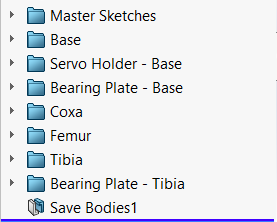

Hexapod Robot
 One of the courses that I most enjoyed during my time at UWaterloo was MTE 544 - Autonomous Mobile Robots. It inspired
me to want to build my own mobile robot. Learning more about robotics, ROS, and autonomous navigation is one of the main
reasons behind this project. In order to do this, I would need a vehicular platform through which this learning can
be done. As well, taking into account my other interests such as nerf blasters, it would also be interesting to have a
mobile nerf turret. As such, this project would need to be a multi-terrain robotic platform, on which future projects,
whether they be a nerf turret, or an autonomous mobile robot can be built upon.
One of the courses that I most enjoyed during my time at UWaterloo was MTE 544 - Autonomous Mobile Robots. It inspired
me to want to build my own mobile robot. Learning more about robotics, ROS, and autonomous navigation is one of the main
reasons behind this project. In order to do this, I would need a vehicular platform through which this learning can
be done. As well, taking into account my other interests such as nerf blasters, it would also be interesting to have a
mobile nerf turret. As such, this project would need to be a multi-terrain robotic platform, on which future projects,
whether they be a nerf turret, or an autonomous mobile robot can be built upon.
Design Parameters
- Needs to be inherently stable (i.e. it should be able to balance without additional hardware or software)
- Should have at least 3 degrees of freedom to allow for versatility in future projects
- Should be multi-terrain
- Stay within a budget of
$400$600 (not including 3D printing) - Needs to have a platform/area on which additional hardware (i.e. LIDAR, Nerf Turret, Robotic Arm, etc.) can be mounted
- System should be able to support its own weight as well as have capacity for additional hardware
- Parts should be either 3D printed or off the shelf

In terms of cost, the deciding factor was the number of motors required for each type of robot. The price, of the various motors required, ranges from 12-20 dollars each. For simplicity, I've considered this to be about the same price range. As such the more motors, the more costly. The tank costs the least with only two motors. In second is the holonomic vehicle with 3 motors in a kiwi drive configuration. Then the aerial drone with 4 motors in a quadcopter configuration and the hexapod in last due to each leg requiring 3 motors for a total of 18 motors minimum.
Concerning the robot being multi-terrain, the aerial drone is the best as it can just fly over any terrain, followed by the legged robot, due to its great maneuverability. Then comes the tank due to the tank treads allowing it to traverse a wider variety of terrain. Lastly, is the holonomic robot as it would only be able function on smooth flat surfaces.
Regarding degrees of freedom, the aerial drone and the hexapod both have 6 degrees of freedom and are thus the best options. The holonomic vehicle has 3 degrees of freedom putting it in third, with the tank taking last place with only 2 degrees of freedom.
In terms of stability/balance, both the holonomic vehicle and the tank are the best as their configuration means they are unlikely to tip over or require extra hardware/software to prevent them from tipping over. The hexapod comes in third, due to its tripod gait which grants it increased stability, but due to the nature of legged robots, changes in terrain height can cause stability issues. In last is the aerial drone, as some sort of flight controller is necessary to ensure, it can stably fly/hover in the air.
After calculating the scores, it was seen that the best option was the aerial drone. However, in the end the next best choice was taken, due to the fact that compared to the other options, the aerial drone is not inherently stable. This was a deal breaking requirement and as the drone did not meet it, the second option was chosen. As well, I don't have access to any large open areas required for testing or using an aerial drone. Furthermore, I currently lack the skills to pilot a drone, and did not feel it would be appropriate to learn to do so with my own custom drone.
Sourcing Parts
 In terms of servos, this hexapod will have 3 per leg, for a total of 18. These servos will need to have enough torque to
support the robot as well as rotate enough to allow for a wide range of movement. The problem with choosing a servo in the
beginning is that you can't know the amount of torque required without knowing the weight and configuration of the hexapod.
As such a relatively high torque servo, the DS3230,
was chosen. This supposedly has 30 kg·cm of torque (at 5v), which should be more than sufficient. Math will be done
when a finalized, or semi-finalized design has been completed to ensure that these servos are adequate.
In terms of servos, this hexapod will have 3 per leg, for a total of 18. These servos will need to have enough torque to
support the robot as well as rotate enough to allow for a wide range of movement. The problem with choosing a servo in the
beginning is that you can't know the amount of torque required without knowing the weight and configuration of the hexapod.
As such a relatively high torque servo, the DS3230,
was chosen. This supposedly has 30 kg·cm of torque (at 5v), which should be more than sufficient. Math will be done
when a finalized, or semi-finalized design has been completed to ensure that these servos are adequate.
Regarding the battery, it should be as compact as possible, and be able to provide at least 18 amps of current. Most servos can pull up to an amp or more when under loaded conditions, leading to this condition. I ended up choosing the Zeee 2S LiPo Battery with 7.4V, 80C, and 7200mAh specifications. Based on this rating, it can supply up to 576 amps, which is more than plenty. Unfortunately, the voltage is a little too high for the servos (max 6.8v) which preferably, would be run at 5-6v to ensure high torque, without damaging the servos. Other batteries that I've found which have the correct voltage, don't specify the maximum current output. As such, I've decided to go with this battery for now, while continuously being on the lookout for better alternatives. If a better battery is found, the CAD model can easily be updated, by changing the relevant variables.
The microcontroller and the ball bearings were the easiest to determine. An ELEGOO MEGA 2560, will be used as the microcontroller. The Mega was chosen, as it has more memory, which will be important if inverse kinematic calculations need to be done. As well, it has more i/o ports which is critical, as we need at least 18 for each servo and more, if sensors or transmitters are to be added. The Elegoo variety was chosen over the Arduino, due to the fact that both boards, are equal regarding their specifications but the Elegoo costs half as much as the Arduino. Lastly, the 608RS ball bearings will be used, due to the fact that these are very common and cheap while meeting the required function.
CAD Model
Normally, this is done within an assembly by creating a layout sketch and having everything reference it. However, when working at the assembly level, it is important to not create circular references or mating conflicts, which can cause unexpected behaviours. As this is a personal project, I've opted to start with a multi-body part instead of an assembly, so as to not have to deal with this issue. Upon completion, the various bodies can then be saved individually and then put into an assembly.
Some design decisions during the making of the CAD model include the leg location, body shape, and the leg anatomy. The body shape and leg locations are related. There are three routes that can be taken with a hexapod; legs that are positioned in a linear pattern, circular pattern, or somewhere in between. I've opted to go with the circular pattern as it should make programming the walking slightly easier than the linear pattern, especially in terms of turning. The body shape needed to be something that allowed for a circular pattern of legs. As such an octagonal shape was chosen. This allowed for a circular pattern and also provided some space between the left and right sides in which sensors may be located. The legs were based off of the anatomy of a real spider (see image below). It was simplified to use 3 joints/motors per leg to reduce complexity and cost. The hexapod legs stop at the tibia, which removes 2 joints. The joint (in the top view) between the patella and the tibia was also removed as this movement is covered by the joint at the coxa/trochanter. With these design choices made, the layout sketches were then created. These are shown below.

Once the multibody part was finished, each body was exported as a separate part and then put together into an assembly. Subassemblies were used where appropriate, along with circular patterns. Find below the various views of the final design of this iteration.


Budget


A bill of materials (BoM) has also been created, which organizes the parts by level based on the assembly and sub-assemblies. This bill of materials, also calculates the total cost based on unit prices, which comes out to be $400.08. This is a more accurate representation of what the Hexapod costs. The full BoM can be found here.
Possible Issues and Solutions
- Twitchy Servos
- This is usually caused by insufficient power. If all the servos are twitchy it means, I need to provide more power to the servos. This can be done through separating the servos into separate circuits with a common ground to ensure sufficient power is being delivered.
- Adding a high value capacitor in parallel with the servo, to ensure there is always a reservoir of power for the servo.
- Check to see if any portion of my code is causing interrupts to be disabled. If yes, see if I can change the code to avoid the disabling of interrupts. If this is not possible, a separate servo driver can be bought and used.
- If after all of this, a servo is still twitchy it might just be that it is defective or that it is having trouble holding its exact position under load. In this case, additional friction can be added to the specific joint by replacing the bearings with a bushing to forcibly stop the twitching from happen. Later on, the servo can be replaced, if appropriate.
- Leg Collision
- In certain positions, the legs can collide with other legs. This can be solved by choosing an adequate step length, such that the legs do not move far enough to collide with each other.
- Overheating Electronics
- Most of the electronics should not overheat unless they are defective. The part that might experience overheating is the voltage regulator. While it can dissipate some of that heat over short periods of time, long durations may cause problems. If this turns out to be an issue, a fan can be installed to provide more airflow and heat dissipation.
- Defective / Fried Electronics
- Ensure I have spares on hand so that I can easily and quickly replace parts.
- Double check circuits before powering them up, to ensure there are no short circuits or errors that might cause harm to the electronics.
- Potentially use a Electronic Fast-Acting Fuse to ensure protection against any short circuits.
- Install a current sensor to monitor the current and allow for shutting down of electronics if the current draw becomes too high.
- High Impact Force on Legs
- While walking, the impact force of the legs hitting the ground can cause damage to the servo's internal gears. Overtime this can cause the servo to stop working. This can be prevented using a softer material at the end of the legs (i.e have rubber leg tips).
- Alternatively, a shock absorber (i.e. springs, dampers, etc.) can be installed in the legs to absorb some of the force.
- A software solution would be to make the legs slow down as it comes closer to the ground so that the impact force is minimized as much as possible.
Results and Next Steps

| Requirement | Pass/Fail | Justification |
|---|---|---|
| 1. Inherently Stable | Pass | A hexapod can use its tripod gait to walk in stable manner. As well, due to the six legs, the hexapod is very stable when stationary. |
| 2. At least 3 Degrees of Freedom | Pass | This robot will have six degrees of freedom, due to its six legs allowing for the platform to move in all directions. |
| 3. Multi-Terrain | Pass | A hexapod can take advantage of its legs to maneuver various terrains. |
| 4. Within $600 | Conditional Pass | The per unit price comes out to be just over $400, which met the original requirement of $400. However, when looking at the total amount being used to buy parts, the cost was closer to $500. This was mainly due to severely underestimating the cost of servos. As such the budget was increased. |
| 5. Platform for Future Hardware | Pass | The truncated cone design for the main body of the hexapod provide plenty of space for a LiDAR or Nerf Turret to be mounted. |
| 6. Support its own Weight | To be Determined | To be Determined |
| 7. 3D Printed or Off-the-Shelf | Pass | As of right now, all parts are either Off-the-Shelf or 3D printed. |
So far, quite a lot has been completed. The 3D CAD design has been completed, a working kinematics model had been derived, and a motion study has been done to verify the kinematics and to visualize the hexapod. However, this project is still a work in progress. As such, there are still a plenty of tasks that need to be done. These are as follows: (Note that this list does not necessarily needed to be followed sequentially)
- Complete calculations to verify servo specifications meet requirements
- Modify CAD model, to deal with the impact force on the legs
- Simulations
- Research pros/cons of Gazebo vs Webots
- Learn about the chosen simulation software
- Export and set up a simulation model
- Use ROS to program the robot to do various task (i.e. walk, turn, climb stairs)
- Test and iterate
- Design electronics
- Determine all necessary components
- Find specifications (i.e voltage, current, footprint etc.)
- Learn a PCB creation software (i.e KiCad)
- Design a PCB
- Make and add CAD models of electronics to the Assembly
- Get a PCB made (likely using a service such as PCBWay)
- Build one leg
- Purchase ball bearings, screws, heated inserts, and 4 servos
- 3D print required parts for the leg
- Assemble and test the leg
- Iterate if needed
- Buy all the required materials
- Build a prototype
- Write a program that take a command (i.e. forwards, left, turn, etc.) and converts it into a sequence of leg movements
- Add additional sensors (i.e. Ultrasonic sensor, limit switches, etc.)
- Start moving design into alternate software (likely Fusion360) in preparation for SolidWorks license expiration
- Find a better battery